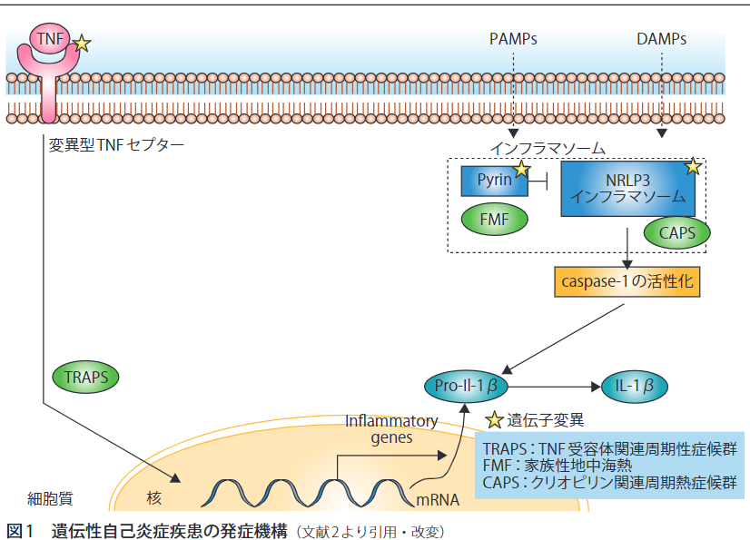
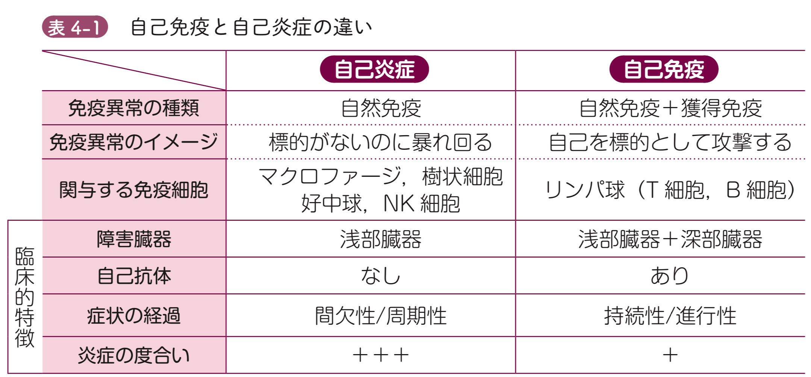
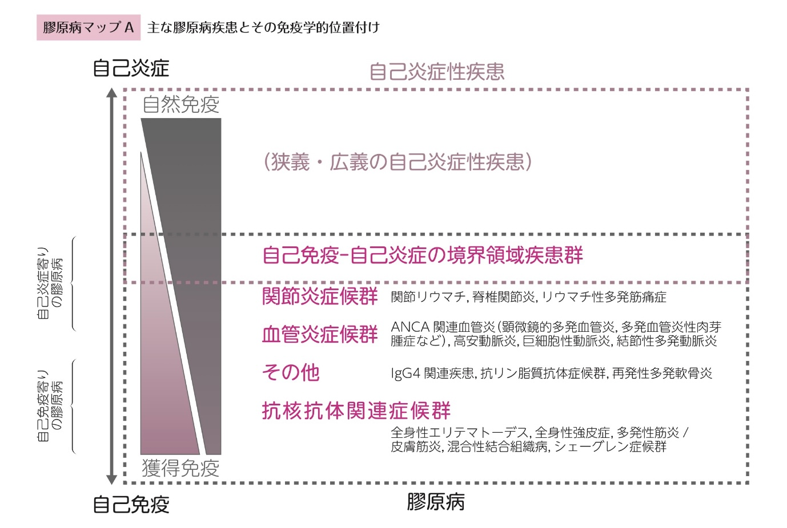
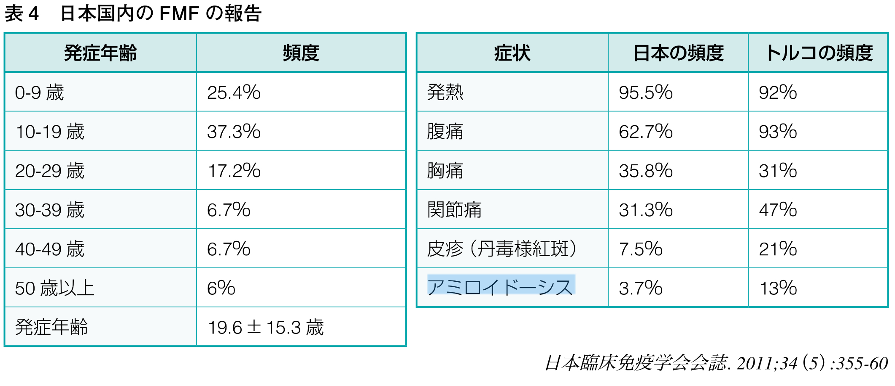
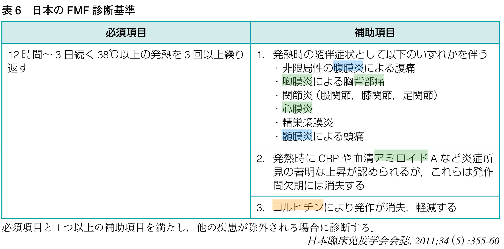

![]()
flowchart TD A["FMF疑い例"] --> B["典型例に当てはまらない症例"] A --> C["FMF典型例"] C --> Z["FMF"] B --> D["MEFV遺伝子解析"] D --> E["変異なし"] D --> F["Exon10以外の変異あり<br>E84K, E148Q, L110P-E148Q,<br>P369S-R408Q, R202Q,<br>G304R, S503C<br>※ヘテロの変異を含む"] D --> G["Exon10の変異あり<br>M694I, M680I,<br>M694V, V726A<br>※ヘテロの変異を含む"] E --> H["コルヒチン（診断的投与）"] F --> H H --> I["反応なし"] H --> J["反応あり"] I --> K["他疾患の検索<br>感染症・悪性疾患・<br>自己免疫疾患・<br>他の自己炎症性疾患等"] J --> L["FMF非典型例"] G --> Z
家族性地中海熱（Familial Mediterranean Fever: FMF）とは
自己炎症疾患のゲシュタルト
2025-02-04
症例
- 26歳女性
- 当院で発熱・汎発性腹膜炎で入院
- その後1ヶ月半周期で2回同様の入院歴あり
- これはFMFでは？
FMFとは
- 自然免疫による自己炎症性疾患の1つ
- 成人発症でも良い数少ない疾患（それ以外だとPPFAくらい）
- 家族性地中海熱は常染色体劣性（潜性）遺伝形式で遺伝
- 自己炎症性疾患 vs.
自己免疫疾患
自己炎症性疾患とは

(清志 et al. 2019)- 好中球による炎症反応
- 抗原暴露によるリンパ球による獲得免疫ではない
- PAMs, DAMPsの刺激から始まる
- 成人発症でも良い数少ない疾患（他にはAOSD, TRAPS, PPFA, VEXAS症候群） (勝繁 2024)
- 膠原病全体の捉え方での自己免疫と自己炎症の鑑別は重要
膠原病の考え方

- 自己炎症 vs. 自己免疫で大きく分かれる(圭佑 2022)
- 自己免疫はリンパ球に、自己炎症は好中球によって生じる
自己免疫疾患と自己炎症性疾患
- 自己免疫も自己炎症もスペクトラム
- 境界領域の疾患が存在する
- 簡単にいうとコルヒチンが効く疾患は全部自己炎症寄り
- 再発性心外膜炎
- 成人Still病
- ベーチェット病
- SpA
- 壊疽性膿皮症
- 簡単にいうとコルヒチンが効く疾患は全部自己炎症寄り

(圭佑 2022)FMFの疫学
- トルコ人に多い（シルクロード）
- 2009年の研究だと日本人で約500人で男女差はない (難病情報センター, n.d.)
- 潜在的にはもっとたくさんいると思われている
FMFの症状

- 高熱が半日〜3日間持続
- ある程度決まった間隔（4週間が最多だが個人差あり）での発作
- ストレスや感染症、月経などに影響される。期間の長さは個人差がある
- 発作間は基本的に症状がないのが特徴
- 重要な症状としては急性腹症、胸膜炎などの漿膜炎や関節炎などが特徴的(@ Padeh and Berkun 2016; 勝繁 2024)
FMFを一言で言うなら
定期的な発熱 + 繰り返す虫垂炎
FMFの鑑別診断
- SLEなどの自己免疫性疾患
- IgA血管炎などの血管炎の発作
- IBDのような局所的な自己免疫性疾患
- Porphyriaなどの代謝性疾患
- 遺伝性血管神経性浮腫などの急性腹症の希少疾患
FMFの診断

- Tel-Hashomer基準は特異度が高すぎると言われている
- 日本だと厚生労働省が別個に定めている (勝繁 2024)
FMFの診断～日本の事情
- 日本人は海外症例と比べて患者背景が大きく異なる
- 発症年齢が高い
- 腹膜炎症状が少ない
- アミロイドーシス合併が少ない
- 日本人のFMFのうち非典型例とされるのが4割ほどいるとされる
- 諸外国のガイドラインだけ見ていると見逃してしまう
FMFの診断は簡単？
- 典型例は知識があれば診断は簡単
- 一方で、基準を満たさない、“FMF崩れ”みたいな症状が多いと言われている
- 大まかなゲシュタルトとして 若年者の「繰り返す発熱と腹痛（+高CRP）」 を忘れない
FMFの診断
- 遺伝子検査は必須ではない
- 遺伝子異常があっても発症しない事も多い（浸透率が高くない）
- 逆に遺伝子異常がない人もFMFを発症することもある
- 常に臨床診断
- 特に重要なのはコルヒチンの反応性
FMFの診断～プラクティカルアプローチ
- ほとんどの場合、直接の診断あるいはコルヒチンの反応性の確認に落とし込まれる
FMFの診断～遺伝子検査
- 16番染色体上の16p 13.3領域のMEFV遺伝子が関連遺伝子と知られている
- 関連がある遺伝子異常は300以上あると言われている
- 日本人のデータだと
- 非典型例だとMEFV遺伝子エクソン10の変異は少ない
- エクソン1（E84K）
- エクソン2（E148Q，L110P-E148Q）
- エクソン3（P369S-R408Q）
- エクソン5（S503C）
- その為、遺伝子検査の判定は難しい
遺伝子検査の方法
- 東京女子医大学に依頼
- 東北大学病院 血液内科・
リウマチ膠原病内科 - 筑波大学医学医療系小児科
- 東京医科歯科大学膠原病・リウマチ
先端治療センター - 東京女子医科大学膠原病リウマチ
痛風センター - 国立成育医療研究センター免疫科
- 信州大学医学部附属病院脳神経内科／
リウマチ・膠原病内科 - 岐阜大学医学部附属病院小児科
- 藤田医科大学病院臨床遺伝科
- 兵庫医科大学病院アレルギー・
リウマチ内科 - 川崎医科大学附属病院リウマチ・
膠原病科 - 九州大学医学部 小児科
- 久留米大学医学部 小児科学教室
FMFの治療
- QOLの改善とAmyloidosis予防が目的
- コルヒチンは90%以上で有用
- コルヒチンが無効な場合はIL-1β阻害薬を使う
- 実際は、「診断が違う」のと「FMFだけどコルヒチン無効」の鑑別がつかない
- ここは、診断前確率に合わせて動きを変えるしかない
Take home message
- 若年女性の繰り返す発熱と腹痛はFMFを疑う
- 診断は臨床第一、コルヒチンの診断的治療をためらわない！
- 家族歴がなくても良い！
- 遺伝子異常がなくても良い！
References
Padeh, Shai, and Yackov Berkun. 2016. “Familial Mediterranean Fever.” Current Opinion in Rheumatology 28 (5): 523–29. https://doi.org/10.1097/BOR.0000000000000315.
勝繁. 2024. ホスピタリストのための内科診療フローチャート：専門的対応が求められる疾患の診療の流れとエビデンス. 3rd ed. シーニュ. https://doi.org/10.57424/9784910440064.
圭佑. 2022. Dr.前島の膠原病論. 中外医学社. https://doi.org/10.18886/9784498027169.
清志, 智裕, and 純. 2019. “家族性地中海熱の診断と治療.” 日本内科学会雑誌 108 (9): 1918–25. https://doi.org/10.2169/naika.108.1918.
遺伝性疾患プラス. n.d. 家族性地中海熱. https://genetics.qlife.jp/diseases/familial-mediterranean-fever/.
難病情報センター. n.d. 家族性地中海熱（指定難病266）. https://www.nanbyou.or.jp/entry/4447.
Medicine · Statistics · Home